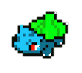

The term pixel art was coined in 1982 by Adele Goldberg and Robert Flegal of Xerox Palo Alto Research center. Pixel art is defined when an image that is manipulated by the artist to deliberately control the placement of each pixel. The concept of pixel art started 11 years prior to the term being published with Richard Shoup's SuperPaint system in 1972. Pixel art is known today mainly from classic video games/arcade games such as Space Invaders and Pac-Man and consoles such as Nintendo Entertainment System and Sega Master System.
Some influences of pixel art come from traditional art works that are very similar to pixel art. Some of these influences are mosaic, beadwork, and counted-thread embroidery. These works influence and are similar to pixel art because they all construct pictures out of small colored units.

There are multiple techniques that help create pixel art, which include:
Pixel art is usually divided until two catergories, which are:
Software used for pixel art includes: